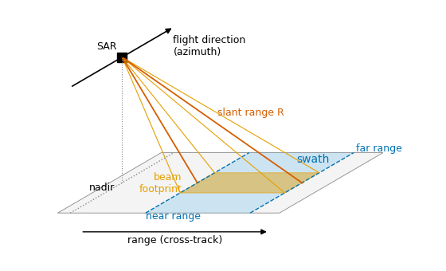

| SAR Concepts: SAR Fundamentals | |
A synthetic aperture radar (SAR) sends microwave pulses sideways from a moving platform and records the echoes as complex numbers: an amplitude and a phase for every pixel. Knowing how the image is formed tells you what a pixel value means, why its resolution differs in range and azimuth, and which product level and wavelength suit your analysis.
Each pixel of a focused SAR image is a complex number, the complex reflectivity of the ground cell:
s = i + j·q = A·ejφ
Here i and q are the in-phase (real) and quadrature (imaginary) parts, A = √(i² + q²) is the amplitude, and φ = atan2(q, i) is the phase. The intensity is I = A². Calibrated intensity becomes the backscatter coefficient (see Radiometry).
The phase holds the two-way path length as a term −4πR/λ (R = slant range, λ = wavelength; the sign depends on the processor's convention), plus the phase of the scattering inside the cell. Within one image the phase looks random from pixel to pixel. It becomes useful when two images are compared, which is the basis of interferometry. Adding many random scatterers in a cell also causes speckle.
The radar looks to one side of the flight track, not straight down (Figure 1). Looking sideways makes the echo delay grow with distance across the track, so points on the left and right of nadir are not mixed. The two image directions are:

Figure 1. Side-looking imaging geometry. The beam illuminates a footprint to the side of nadir; as the platform moves in azimuth, the footprint sweeps out the swath between near and far range.
Range resolution comes from the bandwidth B of the transmitted chirp, not from the antenna:
δr = c / (2B)
A 50 MHz chirp gives δr = 3 m in slant range. On flat ground this becomes δg = δr / sin θ, where θ is the incidence angle: about 5.2 m at θ = 35°.
Azimuth resolution comes from the synthetic aperture, the distance the platform travels while a target stays in the beam. The synthetic aperture grows in proportion to λR/L (L = antenna length along track), which sharpens the angular resolution by exactly the amount that the longer range and wavelength would coarsen it, so the focused resolution is independent of both. For stripmap:
δa ≈ L / 2
where L is the antenna length along track. A 10 m antenna gives about 5 m. Modes that share the beam between several sub-swaths (ScanSAR, TOPS) see each target for only part of that time and have coarser azimuth resolution.
Slant vs ground range. The radar samples in slant range. Projected onto the ground, equal slant intervals cover more ground at near range than at far range. The geometry page explains this and the distortions caused by relief.
| Level | Content | Geometry | Typical use |
|---|---|---|---|
| SLC (Single Look Complex) | complex i/q, full resolution | slant range / zero-Doppler azimuth | InSAR, polarimetry, any phase-based method |
| GRD (Ground Range Detected) | amplitude only, multilooked, phase discarded | ground range on an ellipsoid, still in radar (range/azimuth) layout | backscatter mapping, change detection |
| GSLC (Geocoded SLC) | complex i/q, phase preserved | map grid, terrain-corrected with a DEM | InSAR and time series on a common map grid |
Neither SLC nor GRD is map-projected. Both need terrain correction before they line up with maps or other sensors.
Longer wavelengths penetrate deeper into vegetation, dry soil, snow and ice; shorter wavelengths interact mostly with the top of the canopy and with small surface roughness. Penetration also drops as moisture increases.
| Band | Mission (example) | Frequency | λ | What it mostly sees over vegetation |
|---|---|---|---|---|
| X | TerraSAR-X | 9.65 GHz | 3.1 cm | top of the canopy, leaves |
| C | Sentinel-1 | 5.405 GHz | 5.5 cm | upper canopy, crops |
| S | NISAR (S-band) | 3.2 GHz | 9.4 cm | canopy and larger branches |
| L | ALOS-2, NISAR (L-band) | 1.26 GHz | 24 cm | branches, trunks, ground below sparse forest |
| P | BIOMASS | 435 MHz | 69 cm | trunks and ground below dense forest |
The wavelength also sets the InSAR sensitivity: one fringe equals λ/2 of line-of-sight motion, about 2.8 cm at C-band and 12 cm at L-band.
The radar transmits and receives horizontally (H) or vertically (V) polarised waves. The channel name gives transmit then receive: HH and VV are co-polarised, HV and VH are cross-polarised. Cross-pol returns come mainly from volume scattering, such as vegetation. Systems record one channel (single pol), two (dual pol, e.g. Sentinel-1 VV+VH) or all four (quad pol, e.g. ALOS-2, BIOMASS). See Polarimetry and Dual and compact polarimetry.
i_ (unit real) and
q_ (unit imaginary), plus a virtual Intensity_ band computed as
i² + q² (unit intensity). For a Sentinel-1 IW SLC the names include sub-swath and
polarisation, e.g. i_IW1_VV, q_IW1_VV, Intensity_IW1_VV.Amplitude_VV (unit amplitude)
with a virtual Intensity_VV.atan2(q_IW1_VV, i_IW1_VV), if you need to view it.radar_frequency (MHz), PASS, antenna_pointing,
range_spacing and azimuth_spacing (m), incidence_near and
incidence_far (deg), and srgr_flag (set when the product is in ground range).Intensity_ band of a raw product as calibrated backscatter. It is not calibrated;
run Calibration first.